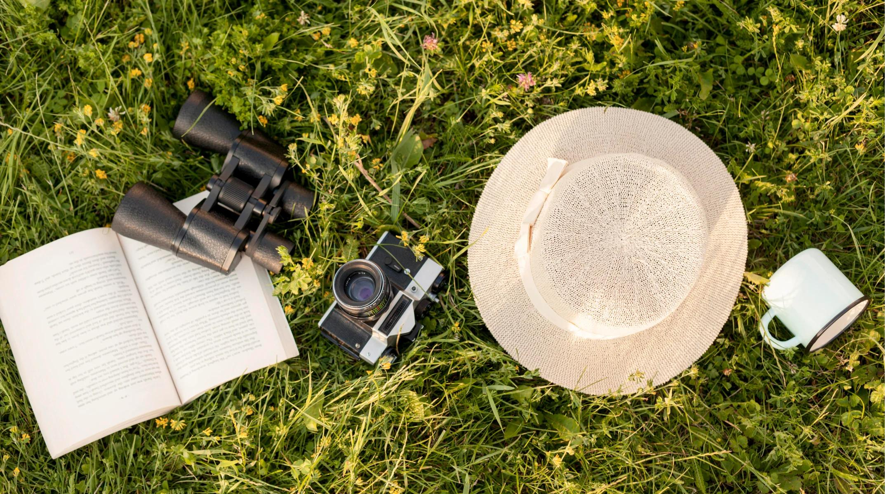
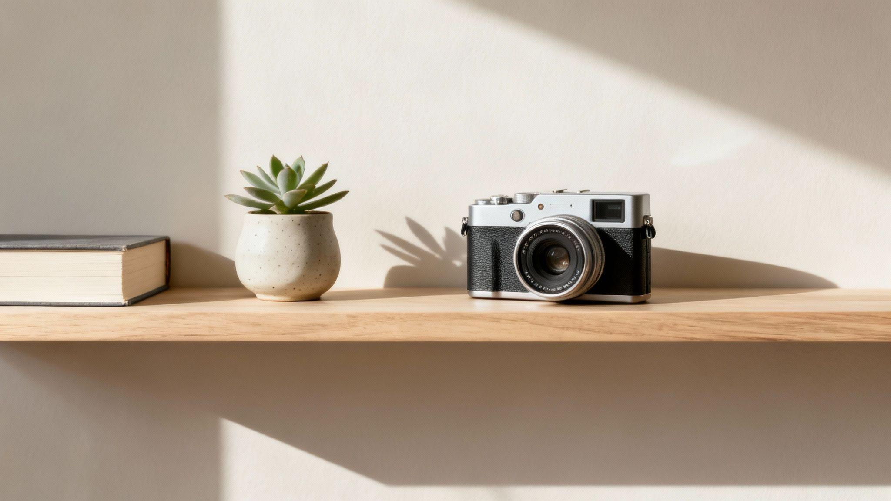
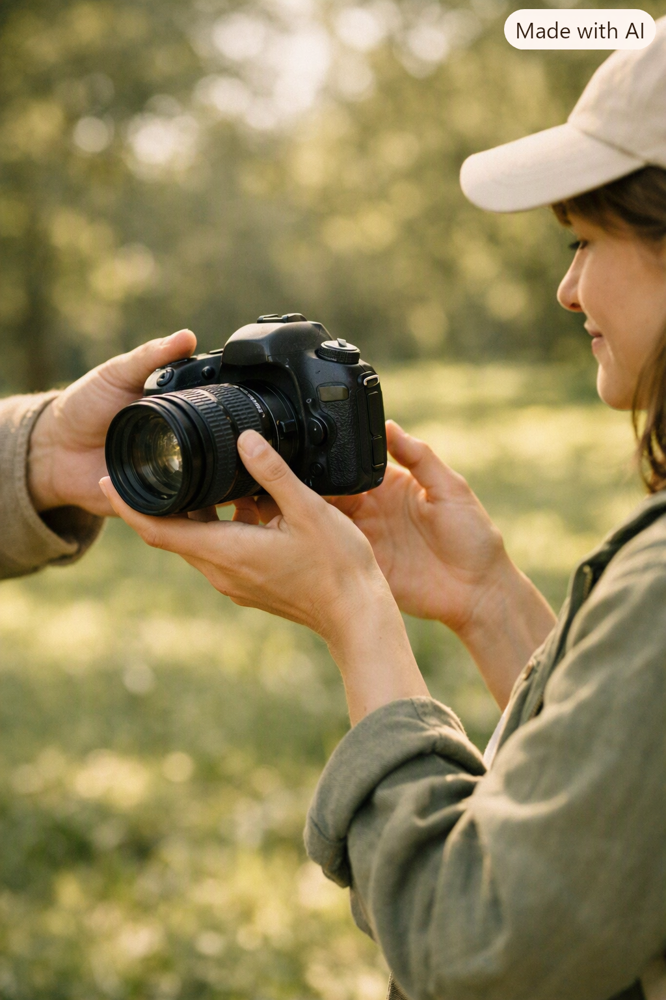
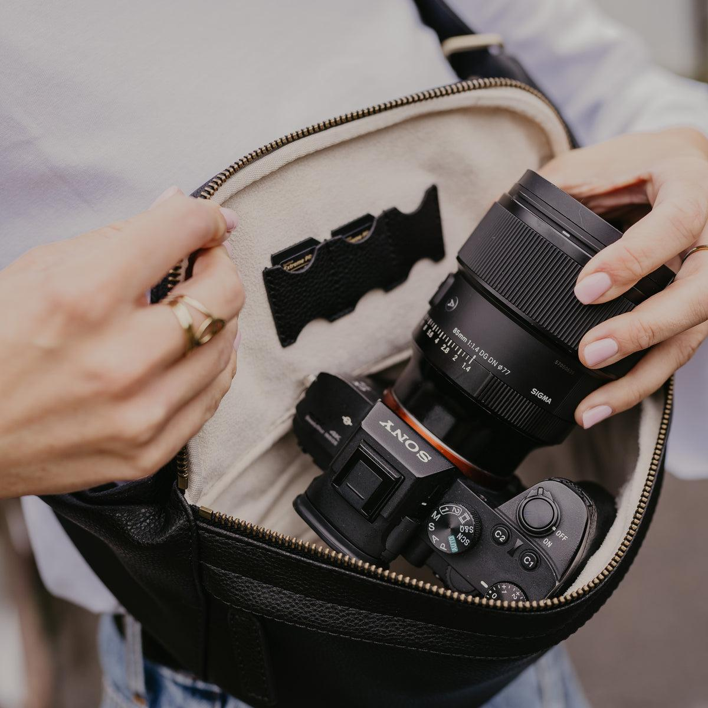

WHY WE EXIST
A world where access matters more than ownership.
We believe you shouldn't have to buy something just because you need it once.

One item. More than one story.
That camera gathering dust, the tent used once, the mixer brought out for special occasions. They could be useful to someone else, too.



Our mission is to make borrowing a practical, accessible alternative to buying things we only need occasionally. We believe that owning less doesn't have to mean having less access to the things that make life easier, more enjoyable, and more meaningful. By connecting people who have useful items with those who need them, USEONCE aims to reduce unnecessary spending, make better use of existing resources, and encourage a culture of sharing and responsibility. We want to help people think differently about ownership, recognising that the value of an item lies not only in possessing it, but also in the experiences and opportunities it makes possible. Every borrow is a small step towards a world where we make more of what we already have.